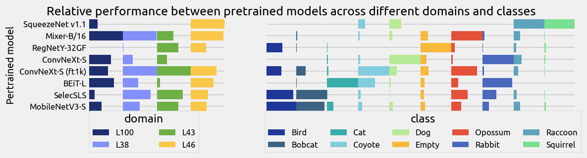
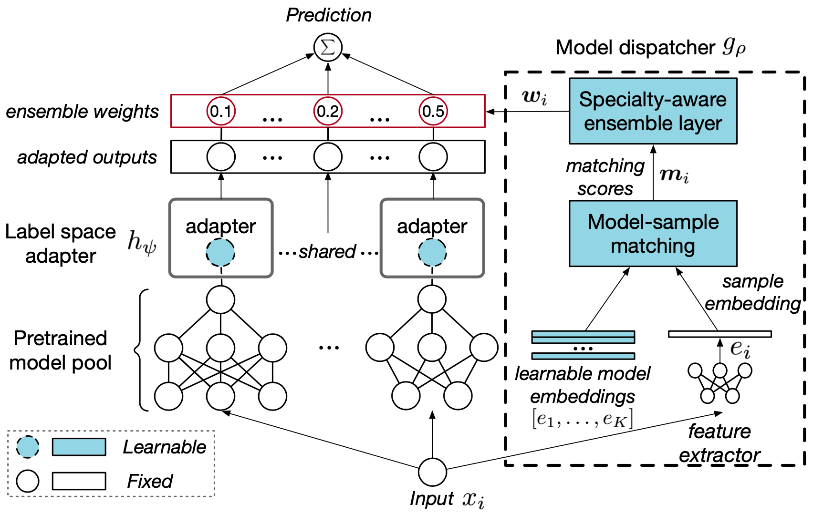
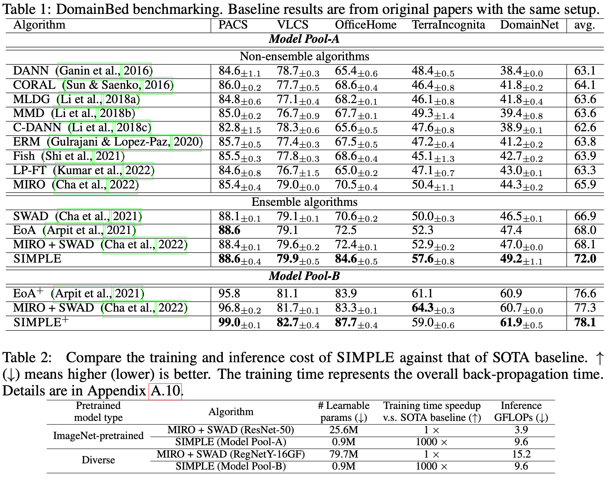

SIMPLE: Specialized Model-Sample Matching for Domain Generalization
Paper: https://openreview.net/forum?id=BqrPeZ_e5P
Code: https://github.com/microsoft/SeqML
Authors
- Ziyue Li (Microsoft Research Asia) litzy0619owned@gmail.com
- Kan Ren (Microsoft Research Asia) kan.ren@microsoft.com
- Xinyang Jiang (Microsoft Research Asia) xinyangjiang@microsoft.com
- Yifei Shen (Microsoft Research Asia) yshenaw@connect.ust.hk
- Haipeng Zhang (ShanghaiTech University) zhanghp@shanghaitech.edu.cn
- Dongsheng Li (Microsoft Research Asia) dongsli@microsoft.com
Abstract
In domain generalization (DG), most existing methods aspire to fine-tune a specific pretrained model through novel DG algorithms. In this paper, we propose an alternative direction, i.e., to efficiently leverage a pool of pretrained models without fine-tuning. Through extensive empirical and theoretical evidence, we demonstrate that (1) pretrained models have possessed generalization to some extent while there is no single best pretrained model across all distribution shifts, and (2) out-of-distribution (OOD) generalization error depends on the fitness between the pretrained model and unseen test distributions. This analysis motivates us to incorporate diverse pretrained models and to dispatch the best matched models for each OOD sample by means of recommendation techniques.
To this end, we propose SIMPLE, a specialized model-sample matching method for domain generalization. First, the predictions of pretrained models are adapted to the target domain by a linear label space transformation. A matching network aware of model specialty is then proposed to dynamically recommend proper pretrained models to predict each test sample.
The experiments on DomainBed show that our method achieves significant performance improvements (up to 12.2% for individual dataset and 3.9% on average) compared to state-of-the-art (SOTA) methods and further achieves 6.1% gain via enlarging the pretrained model pool. Moreover, our method is highly efficient and achieves more than 1000 times training speedup compared to the conventional DG methods with fine-tuning a pretrained model.
No Free Lunch in Pretraining for Domain Generalization: Model-Sample Matching as a Promising Alternative
Fine-grained study on the relationship between pretrained models and distribution shifts: From both empirical and theoretical envidence, we show that no free lunch in terms of pretraining for domain generalization, i.e., there is no single best pretrained model across shifting test distributions.
- Empirical: 283 pretrained models with different network architectures, pretraining datasets, and learning objectives are compared for their generalization performance under different distributional shifts. The results reveal that the pretrained models without fine-tuning generalize well to some unseen domains, but none of these models dominate in all unseen distributions. 
- Theoretical: The theoretical analysis indicates that OOD generalization error is determined by the fitness between model (varying w.r.t. the network architectures and model weights) and test distribution. For any network architecture with fixed training distributions, such as pretrained models, it is always possible to find a beneficial or detrimental test distribution with a small or large generalization error.
Motivated by these findings, we propose an alternative DG paradigm that leverages pretrained models with different network architectures and shifting training distributions, upon which we match the most suitable pretrained models for each OOD sample.
Specifically, our framework first adopts a simple label adapter that projects the label space of the pretraining domain to that of unseen domains, where the adapter is shared by pretrained models from the same pretraining domain. Then, a matching network, which is aware of model specialty, selects a set of proper pretrained models and aggregates them together to conduct the prediction for each OOD sample.
Experiment Results
Our promising alternative exhibits significant performance improvements, averaging 3.9% over the existing SOTA results, with gains of up to 12.2% on single datasets, and a significant increase in training efficiency.
Practical tips for constructing model pools
We investigate the impact of different model pool properties on the generalization performance, to provide useful guidance for the composition and utilization of model pools:
Tip 1: Use a larger model pool.
Tip 2: Incorporate diverse models.
Tip 3: Increasing model diversity matters more than increasing model pool size.
(Please refer to the paper for detailed analysis.)
The above tips from empirical observations that, more models and more diversity can improve generalization performance, again suggest that there is no free lunch for DG. Thus, different pretrained models are needed to address DG. Our method provides a way to realize this goal both effectively and efficiently by (1) adapting pretrained models to unseen domains via label space adaption with a low cost and (2) dispatching best-fit models from a large model pool to handle each OOD sample.
Related Works
Fine-Tuning can Distort Pretrained Features and Underperform Out-of-Distribution